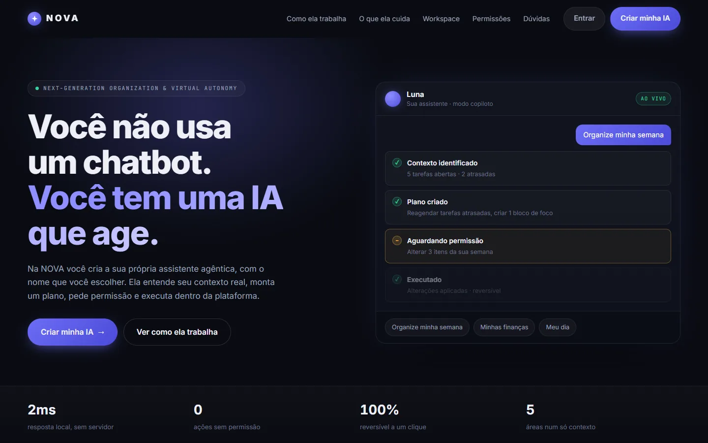
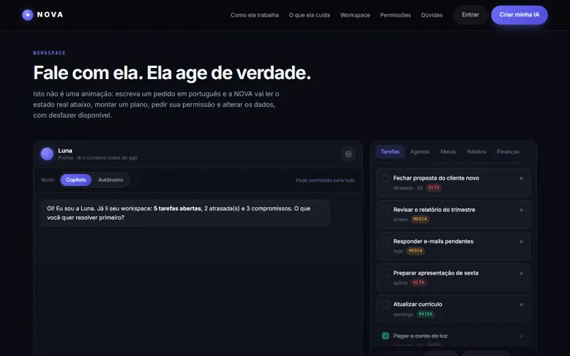
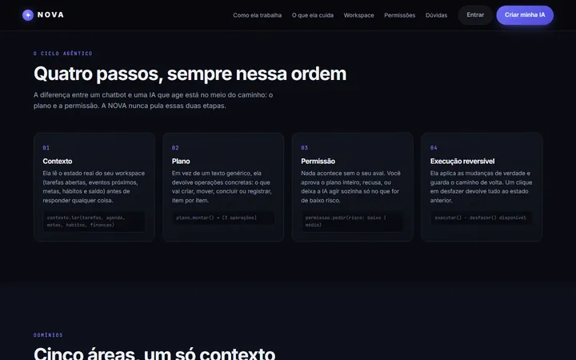
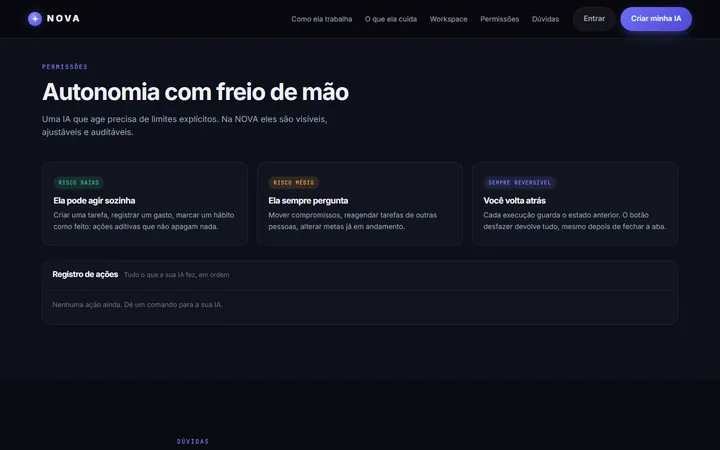
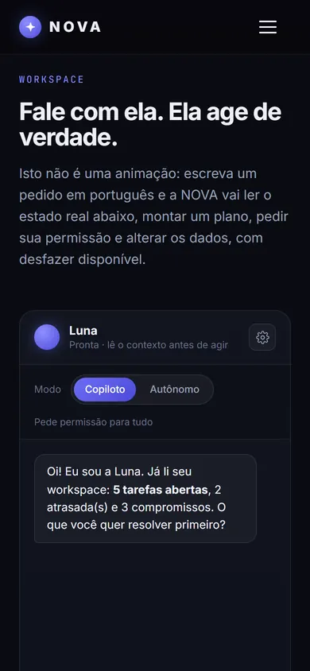

Uma IA que age, mas pede licença.
Assistente pessoal que entende o pedido em português, monta um plano, pede permissão e executa de forma reversível.

A história do projeto
Contexto
Chatbots respondem; a NOVA faz. A ideia era explorar como seria uma assistente que mexe de verdade em tarefas, agenda, metas, hábitos e finanças sem tirar o controle da pessoa.
Desafio
Mostrar autonomia de IA de um jeito que passe segurança: cada ação precisa ser visível, aprovada e desfazível.
O que a APX fez
Construímos um motor que roda no navegador: ele interpreta o texto em português, lê o estado real do workspace, propõe um plano e só executa depois da permissão. Tudo fica num registro de ações com botão de desfazer.
As telas



No celular também.
O layout é reorganizado para a tela pequena, não apenas encolhido. É onde a maioria das pessoas vai abrir o site.


O que ele faz
Ciclo em quatro passos
Contexto, plano, permissão e execução reversível, sempre nessa ordem.
Cinco áreas, um contexto
Tarefas, agenda, metas, hábitos e finanças conversam entre si.
Níveis de autonomia
O que ela faz sozinha, o que sempre pergunta e como tudo volta atrás.
Registro de ações
Cada mudança fica anotada, em ordem, com a opção de desfazer.
Resultado
Um protótipo funcional que demonstra o conceito sem servidor: dá para conversar com a assistente e ver ela agir no workspace.

Tem um negócio que precisaria de algo assim?
Conte como ele funciona. Quem responde é quem vai desenhar e programar.
Conversar no WhatsApp